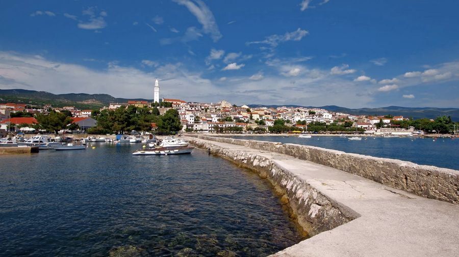
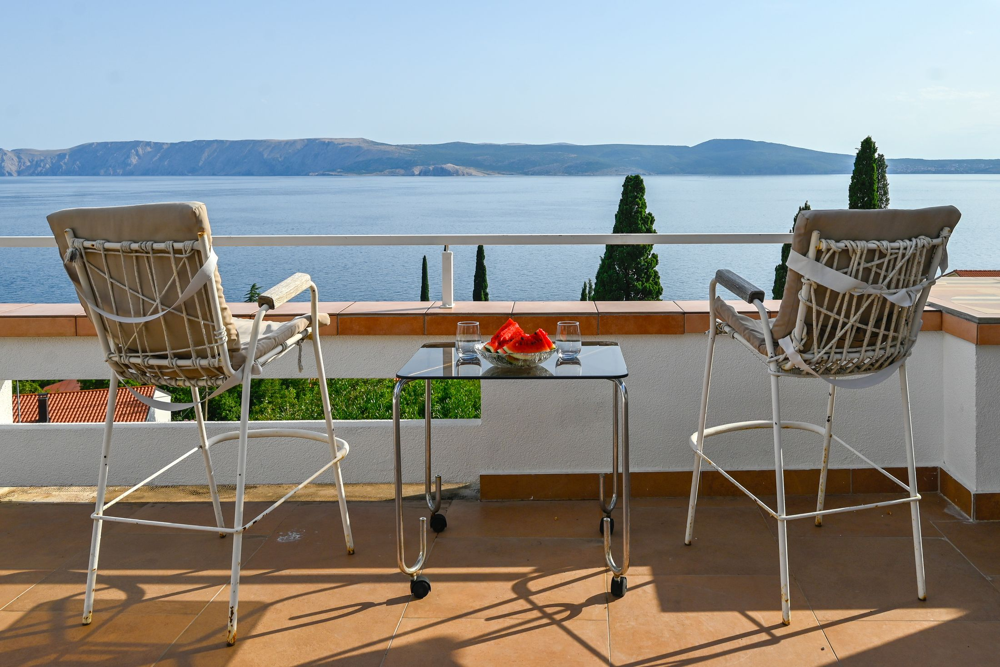

Novi Vinodolski
La cittadina di Novi Vinodolski si trova 50 km a sud di Fiume, nella parte settentrionale dell'Adriatico croato. Si è sviluppata sulla collina sopra un piccolo porto, allo sbocco sul mare di una lunga valle (Vialis vinearia) che un tempo nutriva la popolazione locale ed era nota per le sue viti. Da qui il nome Vino-dol, la valle del vino. Ancora oggi si produce vino, e negozi e ristoranti vendono e servono il vino locale.
Lo Statuto di Vinodol
Redatto dalla casata dei Frankopan, nobile famiglia regnante croata, nell'antica scrittura glagolitica. Fu il primo documento giuridico croato a testimoniare l'autonomia regionale.
Gli Asburgo
Gli Asburgo presero il controllo della regione e nel XIX secolo iniziarono a sviluppare qui il turismo. Il mare limpido e le montagne vicine attirarono i nobili, che vi costruirono le loro case per le vacanze.
Case per le vacanze
La tradizione continuò quando la Jugoslavia incoraggiò il turismo e i professionisti poterono acquistare terreni e costruire le loro case per le vacanze.
Vacanze in famiglia
La città e la zona sono orientate al turismo familiare, con numerosi alloggi privati e alberghi e due marine che accolgono i diportisti.




Cosa fare nei dintorni
- In acqua
- Il mare cristallino invita a nuotare, fare snorkeling, immersioni, vela e moto d'acqua. Le gite in barca sono un modo molto amato per scoprire la costa e le isole vicine. L'isola di Krk, a 20 km, è ricca di patrimonio storico, vigneti e bellezze naturali.
- Storia e cultura
- I Frankopan costruirono la cittadella con la sua fortezza, e oggi i loro grandiosi edifici, chiese e castelli si possono visitare in tutta la zona. Il museo cittadino e le feste estive raccontano la lunga storia, la cultura e le tradizioni di Novi, e ogni anno l'ente del turismo organizza concerti di musica classica, festival, visite guidate e mostre.
- Per chi ama il movimento
- Le montagne circostanti offrono percorsi più freschi per escursioni a piedi e in bicicletta. Si possono visitare diversi parchi nazionali e laghi, il Monte Maggiore (Učka), la penisola istriana e persino Venezia, a sole 3 ore di auto.
- A tavola
- La cucina locale è ricca e varia. I ristoranti sono numerosi e offrono soprattutto piatti tradizionali continentali e mediterranei, come carne o pesce alla griglia. La cucina italiana è facile da trovare e alcuni rifugi di caccia propongono selvaggina.